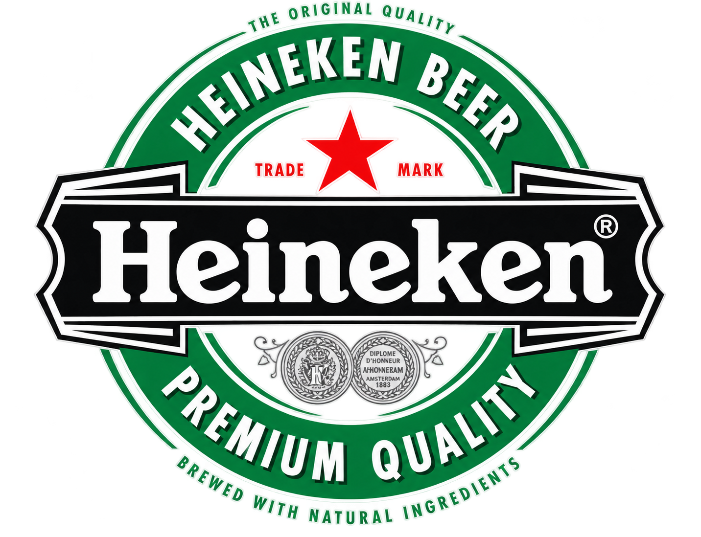

O serviço realizado
A equipe informou a realização de reparo no ar-condicionado de uma Iveco Daily 2025. O veículo foi identificado no registro como pertencente ou utilizado pelo Grupo Heineken.
O material disponível não informa o sintoma inicial, componente reparado, pressões, quantidade de fluido, procedimento executado ou medições finais. Por isso, esta página não atribui uma causa técnica específica ao atendimento.
Iveco Daily 2025Veículo comercial identificado pela equipe neste atendimento.
Ar-condicionadoSistema de climatização reparado conforme informação fornecida.
Grupo HeinekenIdentificação informada para o veículo atendido; não representa anúncio de parceria, patrocínio ou representação oficial entre as empresas.
Registro do cliente/veículo

Grupo HeinekenMarca exibida somente para contextualizar a identificação informada pela equipe para este veículo.
Climatização em veículos comerciais
Em veículos de trabalho, o ar-condicionado faz parte da rotina operacional e do conforto do motorista. O diagnóstico pode envolver pressão, temperatura, acionamentos, ventilação e parte elétrica conforme o sistema instalado.
Conheça a página de ar-condicionado automotivo e a área de linha pesada e utilitários da Auto Elétrica Avelar.